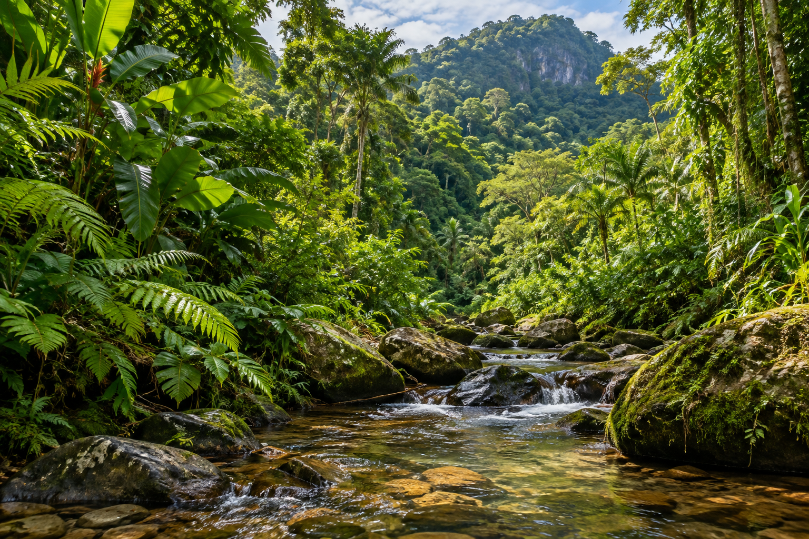

Missão
Despertar o interesse pela vida selvagem e transformar curiosidade em atitude de preservação.

Explore a fauna brasileira, descubra como vivem os animais e aprenda o que cada um de nós pode fazer para proteger os ambientes naturais.
O WebZoo é uma plataforma de educação ambiental do Zoológico de São Paulo. Seu objetivo é apresentar animais e seus ambientes, compartilhar curiosidades e incentivar o cuidado com a natureza. Criada para aproximar o público da fauna brasileira, a plataforma reúne fichas de espécies e orientações para quem deseja visitar o zoológico. O conteúdo é pensado para estudantes, famílias e professores, com linguagem simples e informações confiáveis. O zoológico fica em uma área de Mata Atlântica preservada dentro da cidade de São Paulo. Além de receber visitantes, uma instituição como essa tem um papel importante na pesquisa, na reprodução de espécies ameaçadas e na formação de cidadãos mais atentos ao meio ambiente.
Despertar o interesse pela vida selvagem e transformar curiosidade em atitude de preservação.
Ser uma referência digital em educação ambiental, acessível a qualquer pessoa, em qualquer dispositivo.
Fichas com nome científico, alimentação, habitat e curiosidades.
Horários, ingressos, como chegar e a previsão do tempo para o seu passeio.
Cadastro para receber novidades e agendar visitas escolares.

O maior felino das Américas, conhecido pelas rosetas únicas de sua pelagem.

O bico ajuda o tucano-toco a alcançar frutos e a controlar a temperatura do corpo.

O maior roedor do mundo vive perto da água e se alimenta de plantas.